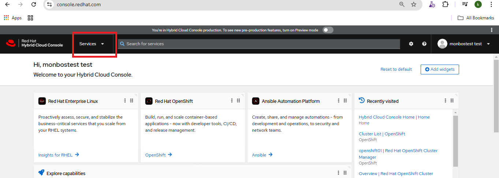
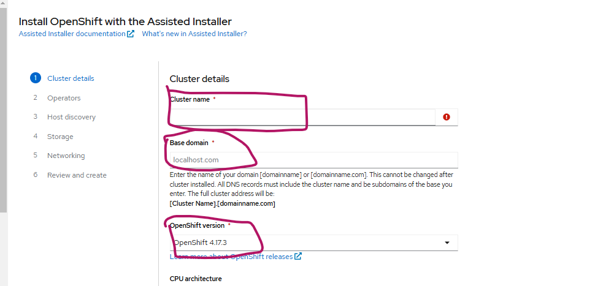
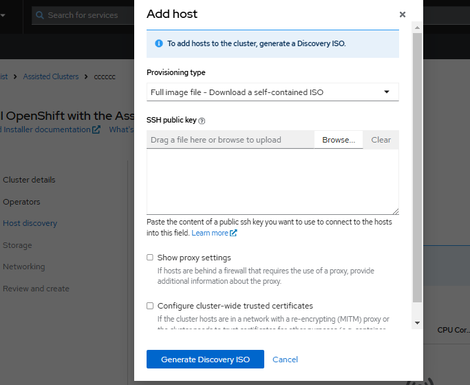
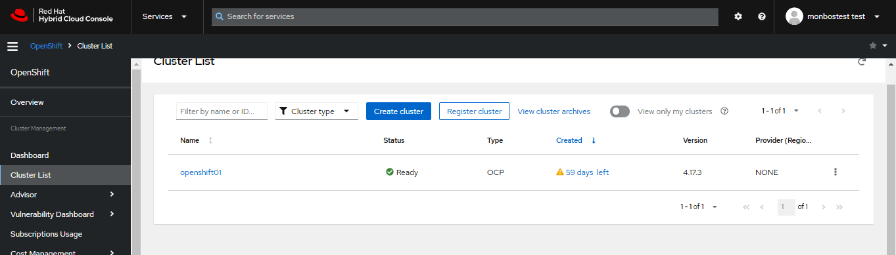
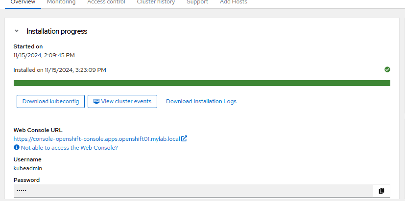

OpenShift Single Node Cluster
OpenShift Single Node Installation Guide (Agent-Based Assisted Installation)
Prerequisites
- Virtualization Software (choose one):
- VMware Workstation
- VirtualBox
- Hyper-V
- VMware vSphere
- Virtual Machine Requirements: Minimum 8 vCPUs, 32 GB RAM, and 120 GB storage (SSD recommended).
- Developer Account on Red Hat: cloud.redhat.com
Installation Steps
-
Log in to cloud.redhat.com and navigate to Services.
 -
Fill in the required details.
 -
Provide your SSH public key and download the generated ISO image.
 -
Create a new VM using the downloaded ISO image.
- Assign 8 vCPUs, 32 GB RAM, and 120 GB storage.
-
Once the cluster is deployed, the details will be visible in the Red Hat Console.
 -
Download the kubeconfig file and kubeadmin credentials.

Post-Installation Tasks
(You can include cluster configuration, storage setup, monitoring, and user management here.)
OpenShift and Azure AD Integration
Prerequisites
- Azure AD Tenant with required user groups.
- A running OpenShift cluster.
Integration Steps
1. Register an Application in Azure AD
- Log in to the Azure Portal.
- Navigate to Azure Active Directory → App registrations → New registration.
- Enter a name (e.g.,
OpenShiftApp). - Set the Redirect URI to the OpenShift callback URL:
https://<openshift-cluster>/oauth2callback - Click Register.
2. Configure Azure AD for OpenShift OAuth
2.1 Create a Client Secret
- In the registered app, go to Certificates & Secrets → New client secret.
- Add a description, choose an expiration period, and click Add.
- Copy and securely store the secret value.
2.2 Assign API Permissions
- Navigate to API permissions → Add a permission.
- Select Microsoft Graph → Delegated permissions.
- Add
User.Readand any other required permissions.
3. Configure OpenShift OAuth for Azure AD
On the OpenShift master node, edit the OAuth configuration:
apiVersion: config.openshift.io/v1
kind: OAuth
metadata:
name: cluster
annotations:
release.openshift.io/create-only: "true"
spec:
identityProviders:
- name: azuread
mappingMethod: claim
type: OpenID
openID:
clientID: <application-id>
clientSecret:
name: azuread
issuer: https://login.microsoftonline.com/<tenant-id>/v2.0
claims:
email:
- email
id:
- sub
name:
- name
preferredUsername:
- email